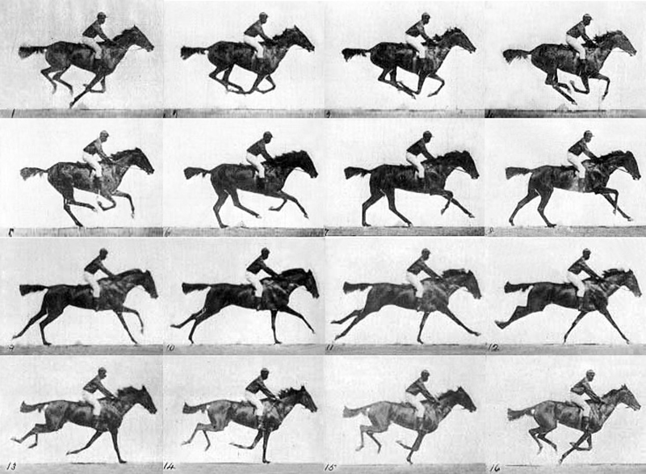
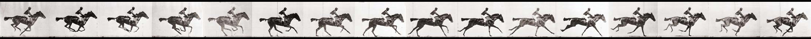

Designing, Defining and Triggering CSS3 Animations without Custom Libraries

Famous photographic work, pioneering the study of motion. Race horse galloping by Eadweard Muybridge.
#animation {
width: 200px; /*divide width by frames */
height: 146px; /*divide height by stacks */
background-image: url("images/race-horse-by-muybridge.jpg");
animation: playX-axis .25s steps(4) infinite, /* set number of frames across */
playY-axis 1s steps(4) infinite; /* set number of rows stacked */
}
@keyframes playX-axis {
from {background-position-x: 0px;}
to {background-position-x: -800px;} /* width of image */
}
@keyframes playY-axis {
from {background-position-y: 0px;}
to {background-position-y: -587px;} /* height of image */
}

Image by Eadweard Muybridge
#animation2 {
width: 138px;
height: 109px;
background-image : url("images/race-horse-filmstrip-muybridge.jpg");
animation: moveX-axis 1s steps(16) infinite;
}
@keyframes moveX-axis {
from {background-position-x:0px;}
to {background-position-x:-2195px;} /* width of image */
}